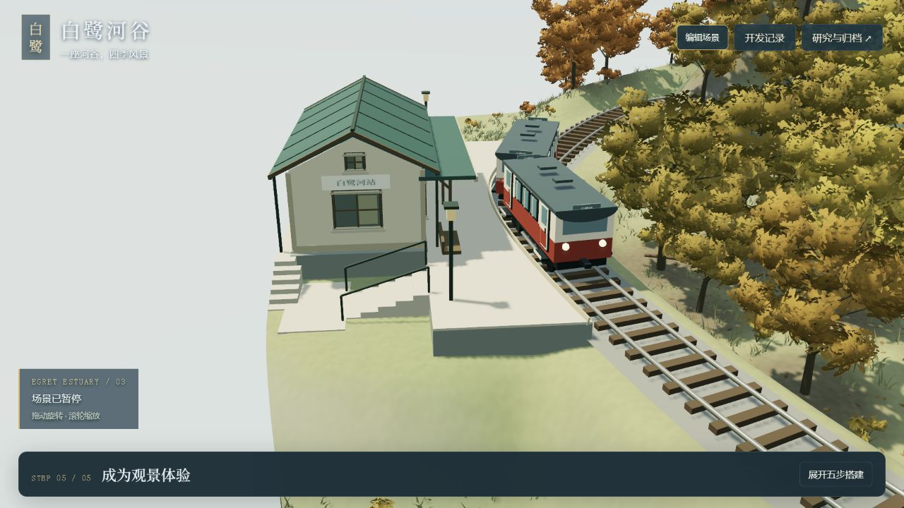
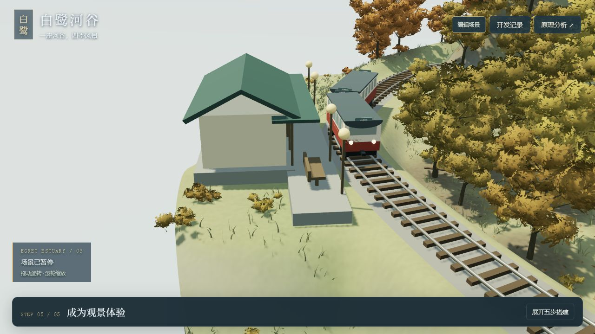
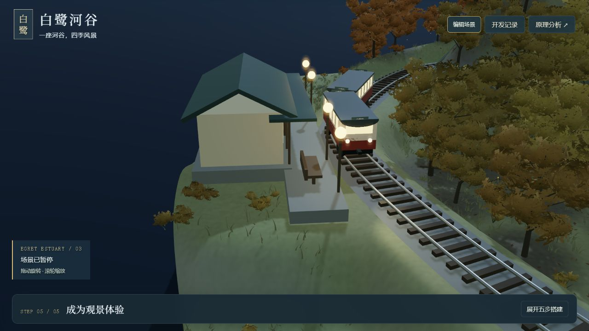
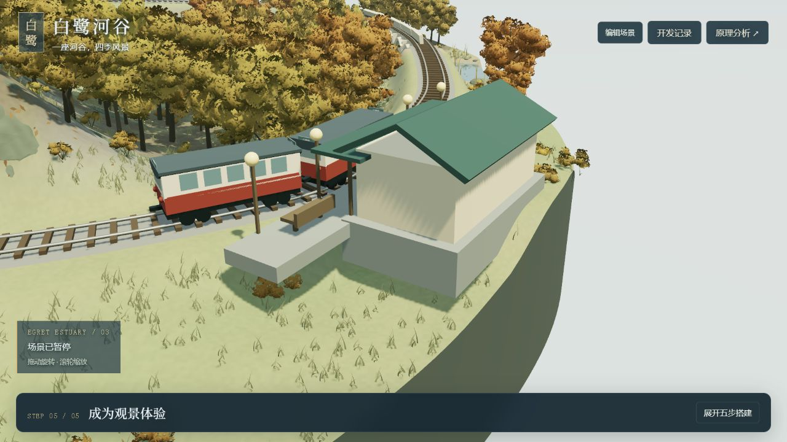

站房：把各个面做完整
已有门窗、雨棚与坡屋顶；默认近景中的端墙仍是大片浅色面。下一步补墙基、檐口及适量结构或开口，并检查背侧。
FIELD STUDY 01 / 2026.09.14
曲线站台跟随轨道，基础与入口台阶接到地面；列车增加车门踏步，站房补齐端墙、背侧、站牌与檐口。停车点让两节车停在站台范围内。
打开当前场景 → 在“编辑场景 → 天气、列车与镜头”点击列车到站近看，主动移车并暂停，直接观察本轮效果。

尚无开关车门、人物上下车或完整室内。以下保留 B3 实施前的研究证据。
先看当前画面，再决定补什么。本轮保留 V23 场景效果，检查白鹭河站的白天、夜间与侧面，形成下一轮开发范围。
观察条件：层峦溪谷 · 秋 · 连续跌水 · 白鹭河站机位，1280×720。列车在站台附近暂停，保持车位切换昼夜；侧面通过手动旋转获得。

已有门窗、雨棚与坡屋顶；默认近景中的端墙仍是大片浅色面。下一步补墙基、檐口及适量结构或开口，并检查背侧。
已有平台、灯具和长椅。侧面看到厚板伸向草坡，尚无明确的出入口；需核对台阶、支撑与接地，再决定补什么。
已有两节车、轮组、转向架、车钩与停站。侧面窗块均匀，车门不清晰；先把门位、踏步和停车点对齐。
灯具与车窗已随夜间变亮。接下来评估窗框、内部暗面和发光层次，不把已有灯光误列为缺失。


车与房用箱体、圆柱、挤出屋顶等三维几何组合。列车按行驶距离在轨道上取前后两个点，确定车体位置和朝向；转向架分别顺着弯道，车轮转角由路程除以半径得到。
车站用轨道切线建立局部坐标，站房与平台相对这个坐标摆放。昼夜状态统一驱动车灯、窗户与站台灯。扩建时继续沿用这些关系，避免只在默认画面上摆对位置。
对应源码：scene-train.mjs、scene-service.mjs、scene-landscape.mjs、scene.mjs。当前是程序化观景与规则运行系统，没有上下客、人物导航或完整车辆动力学。
后续实施需检查三种构图的进站、停留、出站；四季的白天与夜间材质；低、默认、高起伏下的接地和净空。当前这些是验收计划，本次仅完成上述三个观察画面的研究。
人物、水中动物、森林鸟兽和天气行为继续保留为后期扩展。先让它们将来活动的站台、车门与道路具有合理关系。